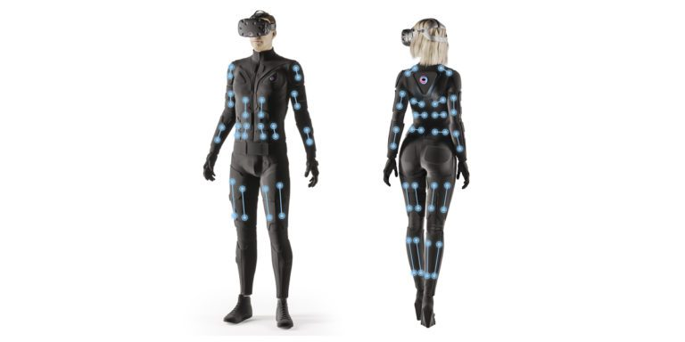
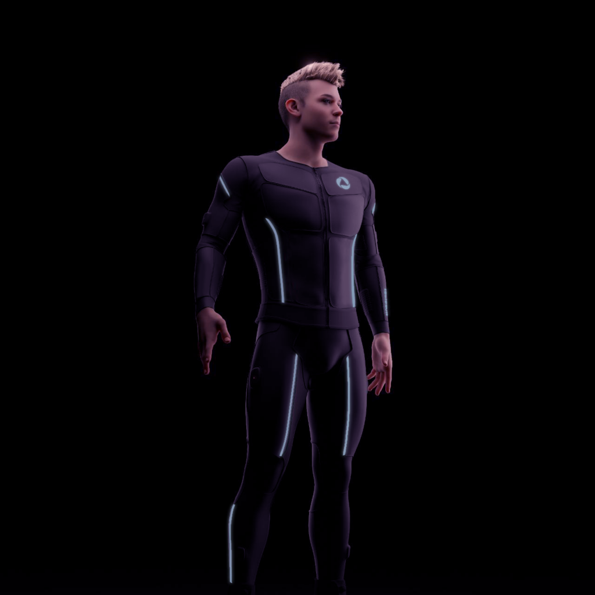
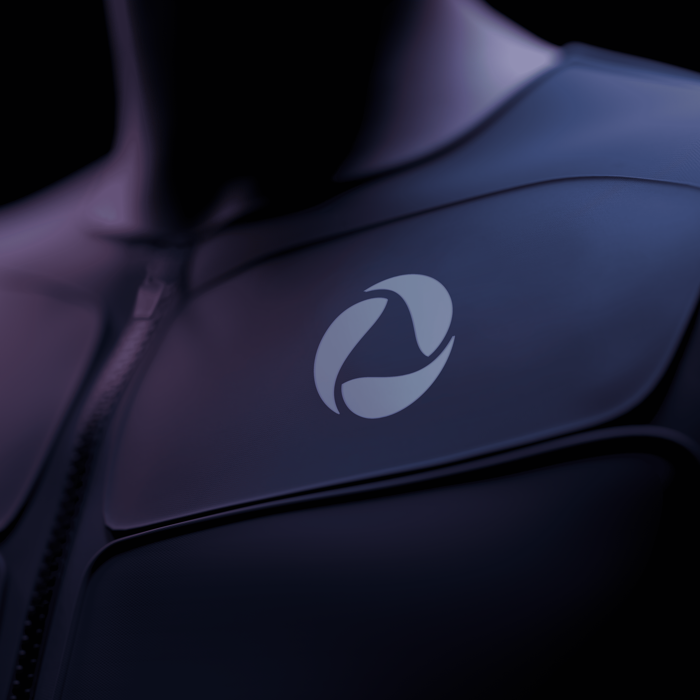
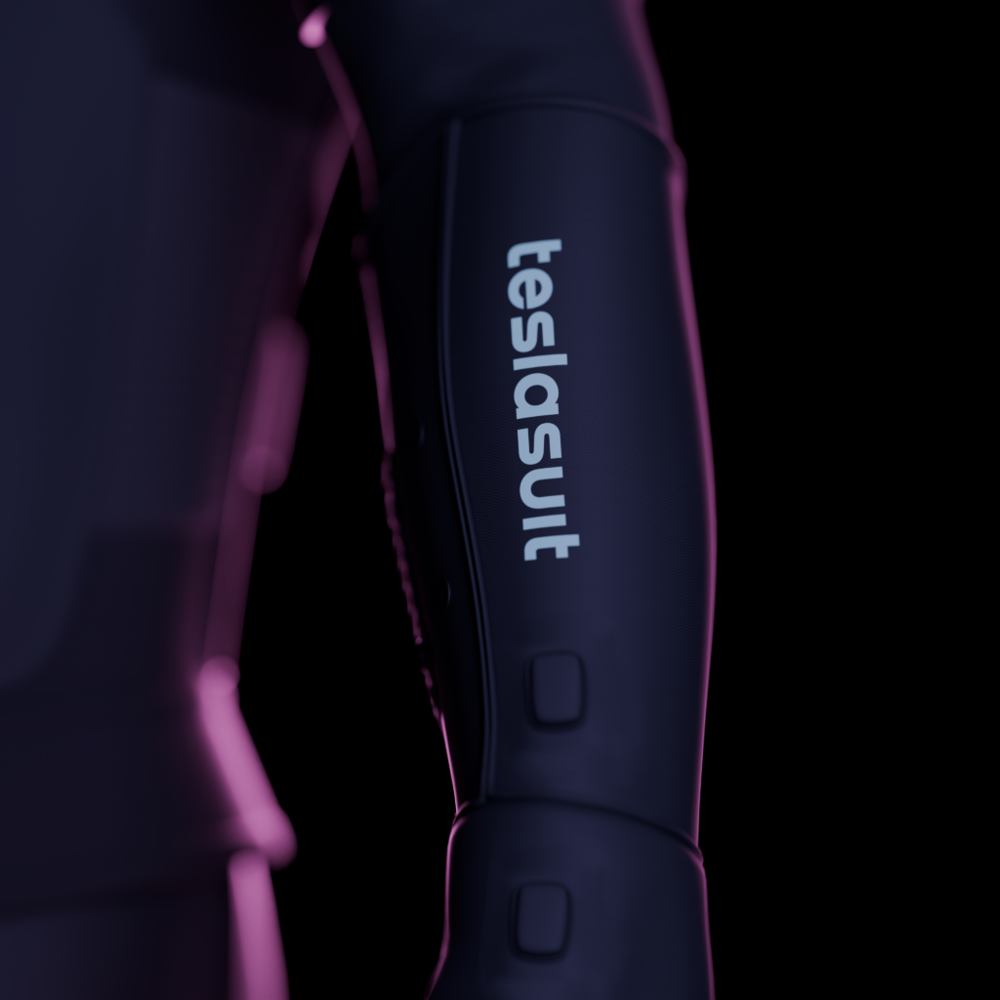

El dispositivo
Nombre: Teslasuit XR5.
Es un traje corporal completo presentado por la empresa Teslasuit como su modelo insignia de 2026. Se ha pensado para uso profesional, industrial y de investigación, y se fabrica en versiones masculina y femenina, con tallas de la XS a la XXL. Dentro de una sola prenda reúne tres sistemas: háptica, captura de movimiento y biometría.

¿Por qué lo he elegido?
Lo he incluido porque es un buen ejemplo de interfaz bidireccional. Un teclado o un ratón solo envían órdenes al ordenador, pero el XR5 hace los dos caminos: recoge lo que hace el cuerpo y devuelve sensaciones al cuerpo. Además, es muy reciente: se presentó en enero de 2026.
Los tres pilares del traje
- Háptica por estimulación eléctrica muscular (EMS): en lugar de los motores de vibración de los mandos, envía pequeños impulsos eléctricos a la piel y los músculos. Así puede simular impactos, presión o texturas por todo el cuerpo.
- Captura de movimiento de cuerpo completo: usa sensores inerciales (IMU) integrados en el tejido para saber en qué postura está el usuario, sin cámaras externas.
- Biometría en tiempo real: incorpora sensores que miden señales fisiológicas, como la actividad cardíaca (ECG) o la respuesta galvánica de la piel, útiles para estimar el nivel de estrés o de esfuerzo.
Beneficios para la IPO
Los tres sistemas juntos forman un bucle cerrado de retroalimentación (closed-loop feedback): el sistema recibe la acción del usuario, responde con una sensación física y mide cómo reacciona su cuerpo. Esto aporta ventajas claras:
- Más inmersión y realismo: el usuario siente lo que toca, no solo lo ve.
- Interacción natural: el propio cuerpo es el controlador, sin mandos en las manos.
- Evaluación de la usabilidad: se puede medir el estrés o la fatiga durante una prueba, sin colocar aparatos aparte.
- Aplicaciones donde el tacto importa: entrenamiento industrial de alto riesgo, rehabilitación médica, simulaciones tácticas y teleoperación de robots.
Imágenes
Algunos detalles del traje, de cerca y en uso:



Evolución: ¿a qué dispositivos sustituye?
El XR5 no sustituye a un único aparato, sino a varios que antes se usaban por separado.
Mandos y controladores hápticos simples
Los mandos de consola y de realidad virtual usan motores de vibración que dan una sensación genérica y localizada en las manos. El XR5 estimula zonas concretas de todo el cuerpo, así que la sensación se parece más a lo que ocurre en la escena.
Trajes de captura de movimiento óptica
Los sistemas clásicos, con marcadores reflectantes y cámaras de infrarrojos, necesitan un estudio preparado y pueden perder el seguimiento cuando una parte del cuerpo tapa a otra (oclusión). Con sensores inerciales en la propia prenda, el XR5 puede usarse en más lugares.
Sensores biométricos externos
Para estudiar la reacción fisiológica de una persona en un test de usabilidad o en un simulador había que colocarle pulsómetros, bandas pectorales o parches aparte. El XR5 integra esa medición en la ropa, de modo que estorba menos.
Evolución dentro de la marca
Teslasuit empezó con kits de desarrollo (dev kits) del traje y del guante, centrados en la háptica y la captura de movimiento. El XR5 mantiene esa base y la unifica con la biometría en una plataforma rediseñada, con mejoras para el desarrollo y el rendimiento. Se presentó en el CES 2026.
Comparativa
| Dispositivo anterior | Limitación | Qué aporta el XR5 |
|---|---|---|
| Mando háptico (vibración) | Vibración genérica, solo en las manos | Sensaciones en todo el cuerpo mediante EMS |
| MoCap óptica (marcadores y cámaras) | Requiere estudio y sufre oclusiones | Sensores inerciales en el traje, sin cámaras |
| Sensores biométricos externos | Aparatos aparte que estorban al moverse | Medición integrada en la prenda |
Precauciones
Al usar corrientes eléctricas sobre el cuerpo, el fabricante advierte de contraindicaciones médicas (por ejemplo, para personas con marcapasos, epilepsia o embarazo) y de que los campos electromagnéticos fuertes pueden afectar al funcionamiento, sobre todo a la captura de movimiento. Antes de usarlo conviene consultar su documentación oficial.
Más información
Puedes consultar las especificaciones técnicas y la documentación para desarrolladores en la web oficial del fabricante:
También hay una documentación del hardware con la información del XR5.